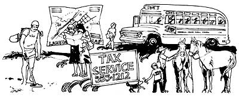

"Work," declares Kathy Matthews, "should fit your interests and energies and lifestyle . . . whether it be part-time, supplementary, or full-time employment. It should give you satisfaction, independence, and money, on your terms."
And the following are only a sampling of the many inspiring ideas for just such satisfying independent careers that Kathy has compiled in her new book, On Your Own.
We've also included, in their entirety, Kathy's warnings and comprehensive getting-started advice . . . in the hope that her words of caution may help you avoid the pitfalls that ensnare so many unwary would-be entrepreneurs.
With only a little foresight and planning, then-plus the good advice in the following excerpt from Kathy's book-you may be closer to attaining your own economic self-sufficiency than you think!
One of the most unhappy aspects of searching for work at home is the lure of those fraudulent "work-at-home" schemes. And what can make an unhappy rip-off turn into a cruel and almost tragic fraud is that the people victimized by the schemes are people who can least afford the loss. After all, people who are looking for extra income in the first place don't have money to throw around. It's tough for the law to monitor this area: There are numerous shady schemes, some schemes are not exactly illegal, and most victims chalk up their loss to experience and neglect to contact anyone who could do them any good. So beware!
Before an in-depth explanation of these various schemes and what to look out for, for those of you who might not read any further and therefore might be dumb enough to respond to a "make millions in two weeks in your outhouse" ad, a rule of thumb (and probably the first rule of thumb that really would fit on your thumb): Stop! That is, when tempted by a great-sounding work-at-home ad, stop, don't do it, don't send them anything, get out an old copy of National Geographic to take your mind off the temptation and thank God you've been saved. That's about all the practical advice you'll need when you're attracted by a glowing (it's the phosphorescence of decay) ad.
And now, for the curious and the sensible, here are four basic work-at-home frauds that you can confidently point to as such for the benefit of uninformed friends and relatives.
1. For a fee, you are offered "instructions", "opportunities", or "ideas" for earning money at home. You dash off a check, and promptly receive a sheet of instructions or ideas that combined with 10 cents will get you through to Ma Bell, or, if followed, would at best raise the suspicions of your neighbors. Some of the instructions explain how you can cheat other unsuspecting people by promoting the same sort of scheme-another variation of the classic chain-letter gyp. This type of fraud often suggests that you can address envelopes in your home. Of course you can. But it will never earn you money because in many ads the "address envelopes" come-on actually refers to addressing envelopes in which you send out the same instructions you were given to victims of your own "address envelopes at home" ads. In a postal fraud case it was discovered that the average amount that could be earned by people who respond to an "address envelopes at home" ad was a grand total of 45 cents per week. Or perhaps you would like to earn money by "renovating neckties for sale"? You simply "cut out soiled parts. Sew the remaining pieces together and sell them to your neighbors." I guess it really depends on your neighbors. In any case, you should be suspicious of any employment advertisement that wants to send you ideas or instructions for a fee.
2. In return for a fee of varying amounts, you are offered some kind of home employment. You send the money, you sit by the mail box, you get an invitation to a costume party, a heartfelt letter from Time magazine about the end of your subscription, three valentines, and a phone bill-but no home employment. After a while you forget about the whole thing, which is just what the advertiser thought would happen. He, meanwhile, has moved to Palm Beach with the secret of making easy money.
3. You are told you can make piles of cash at home by breeding chinchillas or producing widgets on a special machine (which they'll gladly sell you for a mere few hundred dollars). The advertiser often implies that he will buy what you make or at least find another sucker who will. But when selling time rolls around, you find that the bottom has dropped out of the chinchilla market in your neighborhood. Sometimes the ad will specify "no selling". This means that the advertiser will buy your product (which you already have paid them to teach you how to make or breed or whatever). The catch is that in order for them to buy your crocheted bread box it has to be up to their standards. And nothing ever is.
4. "Publish your book (or poem or song) and become famous." You guessed it-the only profit in this deal is made by the promoters, who charge you for telling you that your stuff is terrific. What you, famous writer (poet, songster), wind up with is a huge bill and a flattering critique of your work and some printed copies of your book (poem, song) so you can prove your fame to relatives, neighbors, and passers-by. Meanwhile, the folks back at the phony publishers are humming your tune while they zip up their thigh-high suede boots and ride off in their white Cadillacs. By the way, legitimate "vanity publishers" identify themselves as such and will print your work for a set price, with no promises of fame and fortune. These people are driving VWs.
How an advertiser will tip you off to a fraud:
he'll require money for instructions or merchandise before telling you how the plan operates he'll promise you huge, incredible amounts of money he'll never offer you regular salaried employment he'll insist that experience or special skills are completely unnecessary he'll assure you that there is a large guaranteed market for your works
If you suspect an ad is fraudulent, or even if you have no suspicions but want to be cautious before responding to a work-at-home ad, do the following before you send any money: Check with postal inspectors, the local Better Business Bureau, the state labor department, and any consumer protection agencies you can think of. All of these agencies serve as watchdogs against consumer fraud and will have on file any complaints lodged against specific advertisers. They will be able to advise you on the particular ad you want to answer.
Even if you do get taken, help other unwary people who might fall into the same trap, and:
1. Save all correspondence and a copy of the ad to which you responded and turn it over to your local postmaster for possible investigation. In order to put a stop to a dishonest scheme, there must be evidence that the advertiser cheated you and others deliberately.
2. Complain (loudly) to the publisher of any magazine, newspaper, or other publication which carried an advertisement for the scheme that cheated you.
3. Tell the Better Business Bureau and other consumer protection agencies about what happened so they can make a record of what happened to you.
Going into business for yourself is the American dream. It can be thought of as a salvation, a challenge, a last resort, a duty, or a great opportunity, and it can be the best move you'll ever make or a tragic mistake. The fact of the matter is that while some small businesses move on to fame and fortune, most of them fail. And many of the failures could have been predicted from the very beginning. Starting a business is always a gamble, but there are predictable factors to consider and practical steps to take if you want to strike out on your own. No one of these factors is decisive, and if you're a real entrepreneur, you'll probably want to break some of the rules. But never forget that you can't do too much advance planning. And if you plan on breaking too many of the rules, they may break you in the long run.
Here are five factors that will make a difference in the success or failure of your business.
1. ADVICE: The first thing you're going to need is advice from a variety of sources. Your best initial source is the public library, where you will find books on starting and operating a small business. These books can give you a solid background in what's really involved in making a business work.
The Small Business Administration is an excellent clearinghouse for information on small businesses. They publish a wide range of pamphlets and booklets that are invaluable references for the beginner. Their "Checklist for Going Into Business" outlines basic considerations for people thinking about starting their own businesses. Write to the SBA and ask them for a list of their pamphlets. Indicate what particular business you have in mind, as some of their materials are geared to specific businesses.
Right at the start, you should get both a lawyer and an accountant to give you advice on your business. Legal technicalities can snarl the best-laid business plan unless they're recognized and resolved at the outset. Contact your local government and the board of health for details of zoning and health regulations. You will want the services of an accountant to get the books in order or you will be in big trouble at tax time. You will have to be familiar with the effects of taxes on your business and the tax advantages of certain types of businesses. Remember that the government is a silent partner in any business.
2. MARKET RESEARCH: Your new business will be based on either a service (baby-sitting, window washing, television repair) or a product (custom drapes, homemade cakes, photographs). Before you even consider starting a business, you should know all you possibly can about your product or service in relation to your community. Is there a real need for your business? What is the competition? How will your product or service differ from what's already available? How is the competition doing? Is your idea unique enough to beat the competition and will you be able to price your product at a competitive level? You must be intimately familiar with your community, its income level, and its interests, so that you can gear your business to your area. If, for example, many of the women in your neighborhood work, then a service which has to do with housekeeping, baby-sitting, or catering will probably find a ready market. But if very few of the women in your area work outside the home, then these services will be superfluous. Check with your local Chamber of Commerce for general information on existing products and services in your town, as well as income levels and market information.
3. CAPITAL: Having enough capital often makes the difference between success and failure with a new business. Many new businesses do not make a profit for the first few years, and if there is not sufficient capital to buy more stock, invest in advertising, pay the rent, etc., the business will fail before it ever really has a chance. You should be ,realistic about your costs and long-term expenses, about your outside credit sources and your initial start-up costs.
4. LOCATION: Where you locate your business is of prime importance to its future success. Unless you are starting a mail-order business, you will have to count on a certain amount of local traffic to bring in customers. Check with real estate agents and local newspapers to determine how much business is transacted in a given area, and how many people pass through. You will need to consider the following questions in your final selection of a location: Do you want to buy or rent? Will you need to renovate? Can equipment fit through the door? What is the electrical capacity? Is there storage space? Bathroom facilities? Easy access? You also must check with your municipal government on zoning laws and health codes. If you are setting up a business at home, find out if there are laws prohibiting signs or displays in your neighborhood. In your choice of location, do not allow sentimentality to overrule practicality: That charming old Victorian house would make a lovely antiques shop, but not if it is located on the outskirts of town on a virtually deserted side street.
5. PROFIT POTENTIAL: While there are other reasons for starting a business, the profit motive is usually a strong one. However, many people do not accurately figure out in advance exactly what kind of profit they can make. So they begin a business and three years later realize that they will never clear as much as they did while they were working for a company-and they're working harder than they ever had before. If they went into business mainly for their own personal satisfaction, that's fine. But if they expected to send their kids through college and buy a summer home, that's poor planning.
If you want to start a business, you should be as realistic as possible about how much money that business can earn. Your profit margin must be adequate and you should anticipate the possibility of expansion. You must know the ultimate potential of your business, even if that ultimate potential will not be reached for five years. If your business could gross no more than $10,000 in the best of years, will you be satisfied with this amount? Many beginning businesses make no profit at all for the first few years . . . will you be willing to tighten your belt if need be? Or do you have people depending on you for a certain income?
In addition to these five very tangible basics, you must consider your own personality, ability to work with others, energy, perseverance, time-consciousness, and decision-making ability. If you want to open your own business, you must remember that you'll be the boss-with no job security, responsible for everything, always in competition. And your work will almost always come home with you. Can you handle it all?
Robert Smith, who teaches a course in Chicago about beginning small businesses, gives the following rules for initial success:
Do as much as you can yourself Learn your business from top to bottom Maintain the highest quality at the lowest cost Never let your customer down Watch the competition Pay your bills and taxes on time Use your imagination Be prepared to work harder than you've ever worked before
The Small Business Administration (1441 L Street N.W., Washington, D.C. 20416), which issues a wide range of publications designed to help prospective owners of small businesses. A complete listing of currently available material should be requested from your nearest SBA office or SBA, Washington, D.C. 20416. Ask for these two free lists: SBA 115A Free Management Assistance Publications, SBA 115B For Sale Booklets.
The Small Business Administration also sponsors SCORE (Service Corps of Retired Executives). These retired business people, men and women, are available to counsel you if you want to go into business or want advice on managing an existing one. There is no charge for these services. Write to them in Washington for the address of a SCORE office near you.
How to Start and Manage Your Own Small Business by G. Gardiner Greene ($1.95)New American Library
1301 Avenue of the Americas
New York, N.Y. 10019
"Tax Guide for Small Business" (IRS Publication 334, 75 cents)
Designed to assist businessmen in preparation of tax returns, it is also useful as a guide to conducting a trade, business, or profession, or acquiring or selling a business. It can be obtained through the U.S. Government Printing Office, Washington, D.C. 20402.
"Trade Practice Rules"
These are free pamphlets geared to specific businesses. Ask for "List of Publications, November 1971," from the Federal Trade Commission, Washington, D.C. 20580.
If you live on a farm or a ranch or just in a big old house, near a river or stream or by the seashore, or near a national park, Disneyland, or any tourist attraction, you can begin a popular and lucrative vacation service that can involve your whole family.
More and more Americans are doing this each year, and while the variations are endless the basic idea remains the same: You take whatever special attraction your home or town or region has and parlay it into a small business by introducing tourists to these attractions. This might involve nothing more than using the spare bedroom of your farmhouse to put up a city couple for a week of quiet, clean country living. Sometimes it involves organizing a one-week bicycle camp-and-riding trip through the nearby national park. Or it might mean having a family of urban tenderfeet visit your ranch, ride your horses, and take in your breathtaking scenery for a week or two. You simply take what you have and work with it.
Many families find it a very profitable enterprise to spend their summer-or part of it-with paying vacationers who often become friends, returning year after year. And many vacationers would rather spend a relaxed change-of-pace week on a real working farm or ranch, or take a planned adventure trip with people who know the area well, than spend a great deal of money to stay at a motel and find their way on their own.
If you have any interest in pursuing this vacation service, you should write to Farm and Ranch Vacations, Inc. (36 East 57th St., New York, N.Y. 10022). This organization issues three publications that could be of great interest to you. The books are Country Vacations U.S.A. and Adventure Travel U.S.A. Both may be obtained for $4.25 postpaid (or $5 via first-class mail). The third, a free booklet, "How to Harvest Vacationers", gives detailed information on operating a vacation service.
Every year about April 1, millions of Americans sit down with receipts and calculators and a sense of purpose, only to arise shortly thereafter, breaking inexpensive objects and muttering anti-American propaganda. It's tax time, of course, and the only people who get through the ides of April without at least a twinge are expatriates, infants, and people who hire "tax people". These "tax people" are men and women trained to deal with the complexities of the U.S. tax accounting system and who are expected to save time and money for their clients: They not only fill out your forms correctly, they also aid and abet you in saving money and avoiding audit.
You can become a tax expert and earn extra money at tax time (up to $500 a week at the height of the season) no matter where you live or what your experience with taxes and accounting. H & R Block runs the biggest tax preparation business in the field (they prepare about 14 percent of all long forms filed each year), and gives a complete correspondence course in income tax preparation. The course covers in eighteen lessons everything from filing requirements and wages to pensions and annuities. It costs about $100 and can be completed in as little as one month.
H & R Block also offers classroom courses in more than 2,000 U.S. communities. Classes begin in mid-September and consist of two three-hour sessions per week for thirteen weeks. In most communities, morning, afternoon, and evening classes are available. This course costs $75, which includes books, materials, and supplies. If you can manage it, you might prefer the classroom course to the correspondence course. Unless they're highly motivated, most people do find it easier to complete an in-person course. The classroom course is also less expensive.
In addition to the courses, H & R Block offers a helpful and free two-year consultation service to its graduates as a reference service if you run into a tricky tax question.
LaSalle Extension University
417 S. Dearborn St.
Chicago, III. 60805
North American School of Accounting
4500 Campus Drive
University Plaza
Newport Beach, Calif. 92663
International Accountants Society
209 W. Jackson Blvd.
Chicago, III. 60606
Your town doesn't have to be Gettysburg or New York to have local points of interest, but most people pay no attention to their town's cultural or historical landmarks because they're completely ignorant of them. If you have any interest in your local area's history or cultural life, and you have a passing artistic ability, you can earn some money and perform an excellent service by making "points-of-interest" maps of your town.
Landmark maps can vary in focus, depending on the town and its history. A town's involvement in the Revolutionary War might inspire a map filled with battle sites and approximate locations of soldiers' quarters and routes. A resort town might call for a map of the best beaches and the source of the best ice cream cone in town. You can use whatever focus you like, and in an especially small town you might want to include everything from the local high school to the spot where the church burned down ten years ago. All that really matters is that the map be reliable and honest.
You'll want to reproduce your map when it's finished, so you should contact a printer and explain to him what you have in mind before you even start. He may be able to offer suggestions on how to go about making the most "reproduceable" original map. He will also quote you a price for how much it will cost to print the map. Once you've got his suggestions and general printing information, you're ready to begin.
You can obtain municipal maps, including streets and town boundaries, from your local government. You can trace these maps or get permission from the town to use the map they give you as a basis for your own. (After all, it's a shot in the arm for tourism, and the Chamber of Commerce should be on your side.) Once you have your basic map, you can indicate points of interest with a star or a tiny picture. You can develop your own distinctive style, and come up with lots of possible formats. If the map is historical or cultural in focus, you'll probably want to include legends-little paragraphs of information at the bottom of the map or on a separate page-that will give detailed information on the places noted. If you're not exactly sure how to do your map, look in bookstores for guidebooks that include maps for big cities to see how it's done.
Naturally, in order for your map to be successful, your information will have to be accurate. If you want to do a historical map, check all facts with the local historical society or do an extensive and thorough research job in the local library. A historical map is the most difficult to do well, but it can often be the most interesting.
Once your map is ready, it's time to go back to your printer and put in an order for your first batch. In the meantime, you should be checking markets. Possible selling places include local stationery stores and bookstores, the Chamber of Commerce, any points of interest mentioned on the map (like the best ice cream cone store), hotels and motels in your area, travel agencies, libraries, or special interest groups such as historical or cultural societies. Get the maps to places where local people as well as people passing through can come across them. If your town has no such map available, it could become a popular item for groups like boy and girl scouts, who could use them for field trips, as well as tourists.
You can charge from 50 cents to $5 per map, depending on how extensive and complete it is and how it looks. You'll want to charge less to stores who will need to make a profit. If you sell them for $1 apiece, you could charge the store 80 cents per map. You'll have to work out these details with each of your outlets. In addition to selling in local stores, you can sell maps from your home by putting up signs on bulletin boards, or distributing flyers. You can advertise that anyone interested in buying a map can send you' $1 (or 50 cents, or whatever you charge), plus a small amount to cover postage, and a map will be sent by mail.
Local map making will not bring in large sums of money, but it is fun and the idea can be translated for different interests (local spots for bird-watching, local sporting events, facilities, and sporting goods stores, local restaurants) and different markets. If you develop a variety of maps, you can enjoy a good, if sporadic, income from this part-time occupation, and you might even reawaken some civic pride in your town.
General Cartography by Erwin Raisz
McGraw-Hill Book Company
1221 Avenue of the Americas
New York, N.Y.10020
This is a textbook and reference guide to the principles of map making, with more than 300 helpful illustrations. It's a technical book but is very helpful.
If you can maintain your equanimity behind the wheel while to your rear a pack of youngsters in full throat battle for their favorite seats and press cookies into one another 's ears, you could be a school bus driver. This kind of work can be an excellent part-time occupation for mothers, for they can manage to be home when their children are there, including holidays and summer vacations. It's good for anybody who needs to make some part-time money and doesn't mind being somewhat tied down by a twice-a-day responsibility.
Driving a school bus, whether it be a station wagon, a Volkswagen minibus, or a big yellow, involves following a specified route each morning and afternoon, stopping at designated places and picking up kids along the way. The driver has to be at the first stop at anywhere from 7 to 8 a.m. in the morning, and most routes take from one to one and a half hours to complete. Then, at 2 p.m. (or 3 to 3:30), the kids are picked up at school and the same route is traveled in reverse. Sometimes the school bus driver will also be responsible for making an extra run at lunchtime for the half-day kindergarteners. Most drivers pick up their buses at a central place (often the bus company yard) in the morning and return them when their route is finished.
The main occupational hazard of school bus driving is children: Whether they're in nursery school or high school, most kids feel that a school bus is a free-for-all on wheels. Since as the driver you will be responsible for the kids, nerves of steel are essential. One other slight disadvantage, especially if you're not a housewife, is that even though you may work only four hours a day, your day is pretty well broken up because you're working both early morning and late afternoon. And of course, you can't just decide to disappear for a day and go fishing.
In some areas school bus drivers are well-paid teamsters or members of the school maintenance crew, but in most places either the school or the bus company hires regular people to drive its buses. If you'd like to find work as a school bus driver, call all the local schools-don't forget schools for the blind and/or handicapped-and ask about driving jobs: Check also with bus companies listed in the Yellow Pages to see if they need drivers.
Once you've gotten a job, you'll need a bus-driving license, which involves a bit of training and a fairly easy test. Usually someone will take you through your route a few times and will help you get accustomed to driving the bus.
School bus driving pays an average of $5 an hour, though this figure varies widely, depending on the type of vehicle you drive and the number of students you transport. One housewife-mother I spoke to earns $175 per week for twenty hours of work: her regular salary plus $5 for each additional trip she makes for the half-day students.
One especially nice feature of school bus driving is that, depending on your other work situations, you can collect unemployment compensation in the summer when your salary falls below a specified level. Earn while you tan.
When I first thought of treasure hunting as an unusual way to make money, I was not really considering it with any seriousness. I figured there were perhaps a dozen treasure hunters in this country . . half of them were sifting through Bob Dylan's garbage, half of them were dropping like lead weights from small boats off the coast of Florida, and all of them were crazy. As it turns out, I was as wrong as I could be. There are thousands of normal, uncrazy treasure hunters in this country and they're making good sums of money while you're sitting around reading this book. In fact, some of them make so much money that you couldn't pry any information out of them with a clam knife, and who can blame them? It's all tax-free and great fun, and they don't want any competition.
Treasure hunting is searching not just for sunken treasure, or coins or silver and gold, but also jewelry, guns, rare letters or books, tokens, antiques, and collectibles . . . anything that can be converted to cash value. There's more than gold in them than hills! Many people become so addicted to treasure hunting once they get involved, they think of little else, but you can hunt on a small scale as a profitable hobby in your spare time wherever you live.
The device that has made treasure hunting possible for the masses is the metal detector, which can cost anywhere from $25 to $2,500, depending on the size of its search head, the depth of its probe, and the number of accessories that come with it. A good serviceable one for a beginning treasure hunter can be had for $50 to $100. Basically, all metal detectors consist of a flat transmitter mounted at the end of a handle that is long enough to allow the head to scan the ground while the treasure hunter strolls along. When the signal sounded by the detector changes its sound, you know that metal has entered its field. When you bend down to dig, you might find five flip-top lids or a $5,000 diamond ring.
The simplest way to get started hunting for riches is to purchase a detector and bring it to a beach, a local park, or even the backyard of an abandoned mansion. Good sites for combing include coastlines (the waterline is recommended as well as the actual beach because heavy objects often become lodged there), unrestricted historic spots, and places where the terrain has recently eroded or where large groups of people have congregated. In addition to searching for coins (called "coin-shooting"), beachcombers can earn money in a secondary way. Boyd Herron of Florida collected a $2,000 reward for locating a diamond brooch on the banks of a lake near an Orlando, Florida, hotel. He had distributed "I find lost property" business cards throughout the Orlando area. He spent six hours searching for this particular client and found some other jewelry and $2.36 in coins in addition to the brooch.
This sort of hunting is really beachcombing, since the hunter does not do a great deal of advance preparation. A Mr. Merkitch, who retired to Arizona, used to do random beachcombing on New York and New Jersey lake and ocean beaches. If you can imagine two 55-gallon drums of 14-karat jewelry and other valuables, then you have an idea of his success in just five years of activity.
You can surely make a fair amount of money with this sort of scattershot hunting, but if you're interested in getting more sophisticated about it, there are a number of sources of information that can guide you to real treasure if you're dedicated enough to follow the leads. A few of them are available through the government's Superintendent of Documents, U.S. Government Printing Office, Washington, D.C. 20402, and they include "A Descriptive List of Treasure Maps and Charts in the Library of Congress" (Library of Congress Catalog Card No. 64-60033), price 30 cents, and "Maps Showing Explorers' Routes, Trails, and Early Roads in the United States", compiled by Richard S. Ladd (Library of Congress Catalog No. 62-60066), price $1.25.
One of the best all-round sources of information on treasure hunting, which makes for interesting reading even if you never plan on leaving your armchair, is the National Prospectors' Gazette. This newsletter is filled with tips on treasure hunting, news from treasure hunting clubs, reviews of books in the field, and leads on treasure sites. Write to the National Prospectors' Gazette, Segundo, Colorado 81070 for information on subscription rates. If you have the slightest interest in treasure hunting, this magazine is almost guaranteed to get you hooked. As Karl von Mueller-publisher of the Gazette -says, "We are mighty proud that we help many, many people rid themselves of the time clock and achieve independence. Unfortunately, we have helped drain off at least five hundred taxpayers from the New York-New Jersey area in the past two years and not a one of them who has come west has failed [at full-time treasure hunting] and not a single one of them would go back east for a gallon of blood and a lot of dollars."
A few final tips of where and how you hunt:
Stay off private property unless you have the owner's permission. Poaching gives treasure hunters a bad name and makes them unwelcome in other areas.
Many historic sites are off-limits. State and local governments may prohibit treasure hunting in their parks, or they may require you to share your find with them. So be sure to check with the local authorities if you are hunting in a state or national park or forest.
Wherever you dig or hunt, be certain to leave the place as you found it, and not with rows of freshly dug holes that resemble the leavings of a gopher convention.
Associated Geographers of America
P.O. Box 188
Midway City, Calif. 92655
They sponsor local chartered clubs and annual treasure hunting competitions. Johnny Pounds, president of the AGA, also publishes The Treasure Hunter, a monthly magazine.
Prospectors Club International
P.O. Box 548
Midland, Texas 79701
They publish the monthly magazine, The Prospector, and serve as a forum for ideas and exchange of information on treasure hunting.
RAM Publications
Box 38464
Dallas, Texas
75238
They publish a number of good books on treasure hunting, including Successful Coin Hunting by Charles Garrett, and Treasure Hunters' Manual by Karl von Mueller.
Treasure: How and Where to Find It by Nesmith and Potter
Arco Publishers, 219 Park Ave. South, New York, N.Y.10003
Also highly recommended to novice treasure hunters.
Garrett Electronics
2814 National Drive
Garland, Texas 75041
Underground
Explorations
Box 793
Menlo Park, Calif. 94025
Realco Industries
P.O. Box 10839
Houston, Texas 77081
From On Your Own: 99 Alternatives to a 9 to 5 Job by Kathy Matthews. Copyright © 1976 by the author. Reprinted with the permission of Random House, Inc., New York.
|
 |
|
|